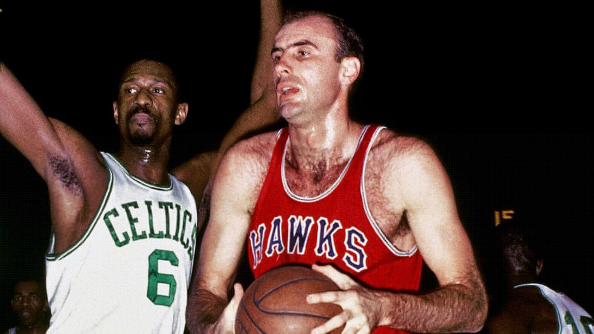

NBA is for everyone!
The NBA was established in 1946 as the Basketball Association of America (BAA) to capitalize on the growing popularity of basketball. In 1949, it merged with the National Basketball League (NBL) to form the National Basketball Association. Early struggles included low attendance and financial instability, but the introduction of the 24-second shot clock in 1954 helped transform the game by increasing its pace. The league’s integration in the 1950s, when African American players like Chuck Cooper joined, marked a pivotal step toward diversity. The NBA's growth accelerated during the 1980s, fueled by iconic rivalries such as Magic Johnson's Lakers against Larry Bird's Celtics, and the rise of global superstars like Michael Jordan in the 1990s. The merger with the American Basketball Association (ABA) in 1976 brought innovations such as the three-point line. The league's influence spread internationally during the late 20th century, with international players and global fans becoming key parts of its community. In recent decades, the NBA has embraced modern technology and analytics, enhancing player performance and fan engagement. Social media has connected players directly with their audiences, amplifying their cultural influence. Through initiatives like NBA Cares, the league impacts communities worldwide, reflecting its role not just as a sports organization but as a global force for change.
Boston Celtics vs St. Louis Hawks
image from NBA offical website: NBA Official website
The NBA Community The NBA community is a vibrant and
interconnected network of players, fans, and organizations united
by a shared passion for basketball. Players are more than
athletes; they are role models and cultural icons, actively
engaging in philanthropy, advocacy, and entrepreneurship. Programs
like NBA Cares focus on education, health, and youth development,
demonstrating the league’s commitment to social responsibility.
Fans, from local supporters to international enthusiasts, are at
the heart of the community, participating in games, online
discussions, and events that create a sense of belonging. The
league also fosters inclusivity and global unity, showcasing
talent from around the world and embracing diverse cultures. By
blending sportsmanship, activism, and entertainment, the NBA has
created a community that extends far beyond the court.
The NBA Community extends its influence through initiatives that
bridge cultural and geographical boundaries, fostering a global
sense of unity. The league hosts international games, attracting
fans worldwide and giving emerging markets the chance to
experience NBA basketball firsthand. Programs like Basketball
Without Borders have played a crucial role in developing talent
globally, nurturing players from underserved regions and helping
them achieve their dreams of competing at the highest level.
Additionally, the NBA leverages its platform to advocate for
important societal issues, such as racial equality, mental health
awareness, and environmental sustainability, empowering players
and fans alike to be agents of change. Through partnerships with
schools, charities, and grassroots organizations, the NBA
continues to inspire future generations, ensuring that basketball
remains a vehicle for social impact, personal growth, and cultural
exchange across the globe.